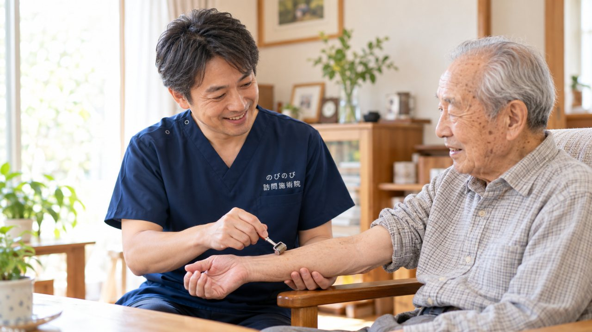
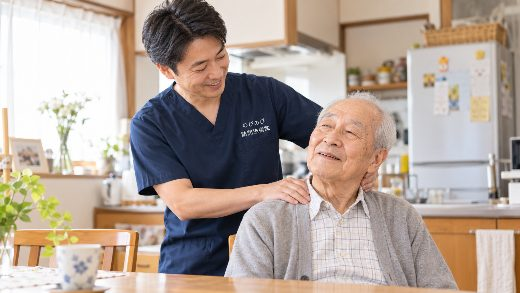
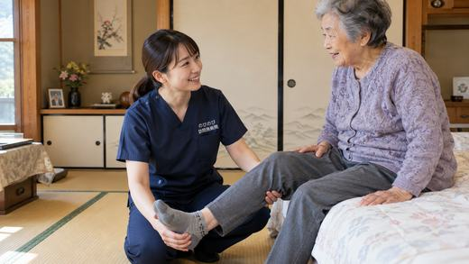

親指から中指にかけてがしびれる。夜中や明け方にしびれて目が覚める。細かい作業がしにくく、物を落としてしまう。こうした手のしびれには、手首を通る神経が圧迫される手根管症候群が関わっていることがあります。原因の見きわめと治療は整形外科などの医師の役割です。鍼灸ができるのは、前腕から手、肩や首まわりのこわばりを和らげ、血のめぐりを助ける補助。通院がむずかしい方には、自宅で受ける方法もあります。
はじめに要点だけ。手根管症候群は、親指・人差し指・中指がしびれ、夜間や明け方に強くなりやすいのが特徴です。まず整形外科などで診断を受けることが先で、親指の付け根の筋肉がやせる（母指球萎縮）、力が入らないといった重い症状は医療機関での対応が必要です。鍼灸は神経の圧迫そのものを治すものではありませんが、こわばった前腕や手をゆるめる手助けになります。医師が鍼やお灸を必要と認め通院がむずかしければ、はり・きゅうの医療保険で受けられ、1割の方は1回およそ395円（総額3,950円）が目安です。
手根管症候群という手のしびれ
手首の手のひら側に、骨と靭帯で囲まれた手根管という狭いトンネルがあります。ここを正中神経が通っていて、その神経が押されると、親指から中指、それに薬指の親指側にしびれや痛みが出ます。小指はふつう症状が出にくいところです。しびれる指がこの範囲にとどまるかどうかが、ひとつの手がかりになります。
特徴的なのは、症状が出る時間帯です。夜中や明け方にしびれで目が覚め、手を振ったり握ったり開いたりするとすっと楽になる。これを何度かくり返す方が多くおられます。家事や手作業の多い方、妊娠期や更年期の女性に比較的よくみられます。手首から先、それも正中神経の通り道に限られたしびれという点が、手根管症候群の輪郭です。
ボタンや小銭がつまみにくい、という困りごと
はじめのうちは、しびれが出たり治まったりします。そのうちに、シャツのボタンがとめにくい、財布から小銭がつまめない、箸やペンの先が思うように定まらない、といった細かい動作でつまずくようになります。手のなかの小さな力加減が効きにくくなり、持っていた物を落とすこともあります。
もうひとつ気をつけたいのが、親指の付け根のふくらみです。ここは母指球と呼ばれ、進行するとこの筋肉がやせて、親指を手のひらから立てる動きが弱くなります。「歳のせい」で片づけず、いつごろから、どの指が、どんな場面でしびれるかを書き留めておいてください。受診のときに医師へ伝えやすくなります。
まず整形外科などで原因を確かめる
手のしびれは、手根管症候群だけで起きるわけではありません。首の骨の変化から腕や手に響くしびれ、糖尿病にともなう神経の不調でも、似た症状が出ます。首が原因のしびれは首や肩の側から考える必要があり、手首の問題とは分けて見たほうがよいものです。気になる方は首・肩のこり、腕のしびれもあわせてご覧ください。手や足の全体にしびれや冷えが広がるようなときは、手足のしびれ・冷えがつらい方へで別に触れています。
どこが原因かで対応が変わるので、はじめに整形外科などで検査を受け、原因をはっきりさせることが先になります。医師は、手首の安静やサポーター、内服薬、神経の状態を調べる検査、程度によっては手術まで、状態に応じて治療を組み立てます。鍼灸はそのあとで、できることを一緒に考えていく立場です。
次のようなときは、様子をみずに主治医の受診を優先してください。親指の付け根の母指球がやせてきた。手に力が入らず物を落とす。しびれが急に強くなった、あるいは一日中続く。こうしたサインは神経への影響が進んでいる場合があり、装具や手術など医療機関での対応が必要になることがあります。時期を逃さない受診が、その後の回復に関わります。
鍼灸でできること、できないこと
先にはっきりさせておきます。鍼やお灸は、手根管のなかで神経が押されている状態そのものを取り除くものではありません。しびれの根っこを治すのは医師の治療の役目で、鍼灸はそこには代われませんし、病気を治すものでもありません。
手や指がしびれると、その手をかばって動かさなくなったり、逆に無理に使い続けたりします。すると手首から前腕、肩や首までこわばって血のめぐりが落ち、だるさやしびれ感がよけいに気になることがあります。鍼灸がお手伝いできるのは、この「かばう緊張」のほうです。前腕や手、肩まわりの張りをゆるめ、めぐりを助ける。緊張がほどけて手を動かしやすく感じる方もいますが、感じ方には個人差があります。効果をお約束するものではなく、しびれの出方を見ながら刺激を加減して進めます。箸やペンを持つ、ボタンをとめるといった動作が少しでもしやすくなれば、暮らしのなかでは大きな助けになります。
自宅で受ける訪問施術の中身
施術は、はりときゅうに、無理のない範囲の手技を組み合わせて行います。手首や指をやさしく動かす機能訓練も、このなかに含みます。これらについて別途の料金はいただきません。これは別の医療保険給付を重ねるものではありません。前腕の張りをゆるめてから手首や指を動かす、というように、その日の手の状態に合わせて順番と内容を整えます。
ご自宅にうかがうので、待合室で長く待つことも、移動でしびれや疲れを増やすこともありません。ご本人が楽な姿勢のまま、いつもの部屋で受けられます。荷物を持っての外出や電車・バスの乗り降りがつらい方、付き添うご家族の予定を合わせにくいご家庭にも向いています。対応エリアは、大阪府の豊中市・吹田市・茨木市・高槻市・箕面市・摂津市・池田市、大阪市の淀川区・東淀川区・都島区・北区・旭区、兵庫県の尼崎市と伊丹市です。エリア内は別途の出張費なく、どこでも同じ額でうかがいます。
ご家庭で手首を休ませる工夫
炊事や洗濯、編み物、スマートフォンの操作など、手首と指を使い続ける動作が多い方は、しびれが出やすい傾向があります。介護で体を支えたり抱えたりする方も、手首に負担が積み重なります。同じ作業を長く続けず、途中で手を止めてゆっくり開いたり閉じたりするだけでも、こわばりのたまり方は変わってきます。
手首を反らせたまま続ける作業や、重い荷物の持ち方も手首にはこたえます。手や前腕を温めるとめぐりが助けられて楽になることがあり、夜にしびれが強い方は、寝るときに手首を反らさないよう軽く支える工夫が役立つ場合もあります。取り入れるときは、主治医にも相談しながら進めてください。
保険と自己負担の目安
訪問鍼灸マッサージは、はり・きゅうの医療保険（療養費）を使って行います。療養費で認められるのは、神経痛・リウマチ・頸肩腕症候群・五十肩・腰痛症・頸椎捻挫後遺症といった慢性の痛みです。手根管症候群という名前がこのなかにそのまま入っているわけではありませんが、医師が神経痛などとして鍼やお灸の必要を認め、ご自身での通院がむずかしい状態であれば、対象になりうるものです。必要なのは要介護認定ではなく、医師の同意書です。手続きは当院が引き受けます。
費用は、1回が総額3,950円。自己負担は1割の方で約395円が目安です。1割の方なら、週2回受けてひと月およそ3,160円になります。この費用は医療保険で計算するため、介護保険の区分支給限度額とは別枠で、限度額を使い切っていても併用できます。なお、同じ部位について医療保険のリハビリを受けている場合、その部位の鍼灸を同じ時期に保険で重ねて算定することはできません。お支払いは月ごとにまとめてお願いし、その月の施術内容のわかる明細をお渡しします。
よくある質問
手根管症候群は鍼灸で治りますか？
神経の圧迫そのものを取り除くものではありません。鍼灸は前腕から手、肩の緊張をゆるめ、動かしやすさを支える補助です。感じ方には個人差があります。治療方針は医師にご相談ください。
手のしびれでも保険で受けられますか？
医師が鍼やお灸を必要と認め、通院がむずかしい状態であれば、手や腕の慢性的な痛み・しびれは保険の対象になります。たとえば週1回うかがう場合、ひと月の自己負担はおよそ1,580円（1割の方）です。
親指の付け根の筋肉がやせてきた気がします
母指球という部分がやせてくると、親指を動かす力が弱まっているサインのことがあります。神経への影響が進んでいる可能性があるので、鍼灸で様子をみるより、早めに整形外科などを受診してください。
夜中や明け方にしびれて目が覚めます
手根管症候群では夜間や明け方にしびれが強くなることがよくあります。まず医師に相談して原因を確かめておくと安心です。施術では手首や前腕のこわばりを和らげ、寝るときの手首の工夫もお伝えします。
手術をした後でも受けられますか？
術後の状態や主治医の指示によります。経過をうかがい、必要に応じて主治医と連携しながら進めます。毎月のおおよその費用も、あらかじめお伝えできます。
要介護認定を受けていなくても頼めますか？
受けられます。訪問鍼灸マッサージは医療保険で行うため、要介護認定は必要ありません。必要なのは医師の同意書で、その準備は当院が段取りします。介護保険の限度額とも別枠です。
対応エリアかどうか、どう確かめればよいですか？
大阪府の豊中市・吹田市・茨木市・高槻市・箕面市・摂津市・池田市、大阪市の淀川区・東淀川区・都島区・北区・旭区、兵庫県の尼崎市・伊丹市が対象です。ご住所を電話でお伝えいただければ、その場でお答えします。別途の出張費はかかりません。
誰が施術に来るのですか？
はり師・きゅう師の国家資格を持つ者がうかがいます。しびれの出る場所や時間帯、通院の様子を聞き取り、医師の診断を土台に、手首から肩まわりへできることをご説明したうえで進めます。

胸郭出口症候群・腕や手のしびれ｜つり革につかまるとつらい方への在宅の鍼灸ケア
続きを読む
首・肩のこりや腕のしびれがつらい高齢の方へ｜頸肩腕症候群と訪問鍼灸マッサージ
続きを読む
首・肩・腕のしびれや痛みが続く方へ｜頸肩腕症候群と訪問鍼灸マッサージ
続きを読む
手指の関節のこわばり・痛みを自宅でケア｜訪問鍼灸マッサージ
続きを読む
足の指の付け根の痛み・しびれ（モートン病）でお悩みの方へ｜訪問鍼灸マッサージ
続きを読む